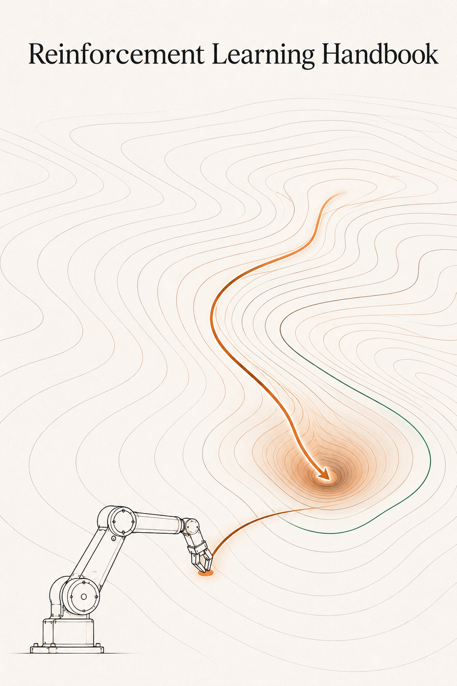

强化学习路线图
数学优先 · 面向 robotics
图里每一格都是一课，已经写完的三格可以直接点开；源文件 docs/assets/roadmap.drawio（draw.io 打开可改）。
这条链为什么是这个顺序
从「会算」到 Q-learning，一共七步。每一步都只解决前一步留下的一个具体问题——没有一步是可以跳过的。
| 第几步 | 学什么 | 为什么需要它 / 它解决了什么 | 在哪 |
|---|---|---|---|
| 1 | MDP | 先要有一套能把问题写下来的语言：状态、动作、转移、奖励、折扣。写不下来就没法讨论对错 | 第 1 课 |
| 2 | V 与 Q | 把「以后能拿多少」压成每个状态一个数。策略是个函数，无穷维没法优化；值把它降成一张表 | 第 0 课 / 第 1 课 |
| 3 | Bellman 方程 | 给出这张表必须满足的自洽条件，并且证明满足它的表只有一张——从此「最优」有了可验证的定义 | 第 1 课 |
| 4 | 动态规划 | 把自洽条件变成能真的跑出答案的算法：策略评估、策略改进、值迭代，并且保证一定收敛 | 第 2 课 |
| 5 | MC / TD | 上面四步全都要求知道转移概率 P。真实环境不给你 P，于是把式子里的期望换成真跑出来的样本 | 第 3 课 |
| 6 | SARSA | 光会估值还不够，要能一边学一边改策略。SARSA 评估的是「含探索的自己」，是最直接的一步 | 第 4 课 |
| 7 | Q-learning | SARSA 学的是当前这个还在探索的策略，不是最优策略。把目标里的采样动作换成 max，就能一边随便探索、一边学最优——这就是 off-policy | 第 5 课 |
1–6 都在 Stage 0：前四步已经写完，MC / TD 与 SARSA 是接下来的第 3、4 课。第 7 步 Q-learning 是 Stage 1 的开篇——因为它是第一个 off-policy 算法，而 off-policy 正是 Stage 1 的主题：replay buffer 靠它才成立，致命三角的第三条腿也是它。
主线
马尔可夫决策过程与动态规划
这一阶段建立语言、算法与全部数学工具：概率与期望、线性代数、分析与优化、信息论与贝叶斯都在这里交代清楚，后面各阶段随用随查。不学任何「花哨算法」，只建立语言和那一个算子。90% 的 RL 论文看不懂，是因为这一层没有推熟，而不是因为网络结构没见过。Stage 1 往后的每一个算法，都是在这台机器上做减法。
核心概念
- MDP 六元组 、轨迹分布 、回报
- 三个值函数：、、优势 ，以及它们的互推关系
- Bellman 期望方程 与 Bellman 最优方程：注意后者是非线性的（含 ）
- 确定性 vs 随机转移：期望那一项什么时候退化成「查一个数」
- 折扣 γ 的三个身份：看多远、误差放大器 1/(1−γ)、值的量级
- Bellman 算子 、 是 -收缩映射（sup 范数下）
- Banach 不动点定理 ⟹ 唯一最优值函数存在、值迭代必收敛
- 策略改进定理（Policy Improvement Theorem）——策略迭代收敛的全部依据
- 后验停机界：只用相邻两轮就能算出「离答案还有多远」
- sup 范数为什么不能换：收缩证明的第三步只在它下面成立
- 策略评估（迭代解 ）与直接解线性方程组的对比
- 策略迭代 Policy Iteration：有限步收敛的证明
- 值迭代 Value Iteration：几何收敛率
- 广义策略迭代 GPI——理解它，后面 actor-critic 就是它的采样版本
- 扫描顺序 / 初值 / 一张表还是两张表：什么时候真的能提速
- 从 V 到 Q：贪心里那个 ∑P 就是模型，Q 把它吸收掉
- 为什么必须换掉动态规划：Bellman 方程里那一项 ∑s′P(s′|s,a)V(s′) 要求你知道转移概率；真实环境不给你 P，只能推一下、看看去哪了
- 蒙特卡罗（MC）：走完整条轨迹，用真实回报 Gt 当目标。无偏，但要等终止、方差随轨迹长度累积
- 时序差分 TD(0)：只走一步，用 r + γV(s′) 当目标——没走完的部分用自己的旧估计顶上（自举）。有偏，但方差小、能在线、不需要终止
- 自举的四个后果：有偏 · 方差小 · 能在线 · 以及它是致命三角的第二条腿。看任何算法先找它的目标里有没有「自己」
- 步长 α 与 Robbins–Monro 条件：∑αt = ∞、∑αt² < ∞；什么时候必须衰减，什么时候固定也行
- certainty equivalence：TD 为什么往往比 MC 快——它额外用上了马尔可夫结构
- 从预测到控制：会估值还不够，要能改策略。于是从 V 换成 Q——贪心 argmaxaQ 不需要模型
- ε-greedy 与探索：不试就没有数据，全试又学不好；这是贯穿全书的取舍
- SARSA：目标里的 a′ 是真的按当前策略采出来的，所以它评估的是「含探索在内的自己」
- Expected SARSA：把 a′ 的采样噪声也去掉
- 广义策略迭代在采样世界里的样子：评估不做到底、改进也不彻底，交替进行照样收敛
- 期望 E[X]：Bellman 方程里那个 E 就是它。转移带随机时「落点的值」不是一个数，是一组数按概率加权——P(s′|s,a) 对固定的 (s,a) 求和等于 1，这条保证了加权平均落回一个具体的数
- 期望的线性性：E[aX + b] = aE[X] + b。γ-压缩证明里「−1 那一项抵消、0.9 提到括号外」靠的就是它
- 条件期望与全期望公式：E[X] = E[ E[X | Y] ]。「先走一步、再看剩下的」之所以能拆开写，全靠这一条——Bellman 方程本身就是它的一个实例
- 马尔可夫性：给定当前状态，未来与历史无关。它是「值只写成 s 的函数」这件事成立的前提；一旦不成立，就是 POMDP
- 大数定律：样本均值收敛到期望。蒙特卡罗为什么能用真实回报当目标，理由只有这一条
- 偏差与方差：E[估计] − 真值，以及估计自己的波动有多大。MC 与 TD 的全部取舍就摆在这两个词上，后面每一个算法都会再称一次这杆秤
- 矩阵乘向量：固定策略时 Tπ 就是一次矩阵乘加一个常向量
- 解线性方程组：策略评估的闭式解 (I − γPπ)V = rπ
- 范数：L1 / L2 / sup 范数 ‖·‖∞。收缩证明只在 sup 范数下成立，换成加权 L2 就是 Stage 1 失效的地方
- 压缩映射与 Banach 不动点定理：值迭代必然收敛的全部依据
- 几何级数：1 + γ + γ² + ⋯ = 1/(1−γ)。既是「看多远」，也是误差放大器
- 梯度、链式法则、随机梯度下降：Stage 1 ③ 把表换成函数之后全程要用
- 随机逼近与 Robbins–Monro 条件：∑αt = ∞、∑αt² < ∞——TD 的步长为什么要这样取
- Jensen 不等式：E[max] ≥ max E，Q-learning 最大化偏差的来源
- 条件概率与贝叶斯公式：后验、似然；POMDP 的 belief state 就是后验
- KL 散度 DKL(p‖q)：非负、不对称。TRPO 的约束、PPO 的度量、RLHF 的惩罚项都是它
- 交叉熵与最大似然：行为克隆的损失函数
- 熵 H(π)：SAC 把它直接写进目标函数
- ELBO / 变分下界：世界模型（Dreamer）与「把 RL 看成推断」的那一套
- Fisher 信息矩阵：自然策略梯度里的度量
- 占用测度 与 RL 的线性规划对偶形式 理论向
- 值函数是一次维度的坍缩：无穷维的策略优化 → 每个状态一个数
全书符号约定
符号从第 0 课到最后一课不变。正文里每个新符号第一次出现时都会当场定义，不会「随手写一个字母就开始用」。
| 符号 | 含义 | 第一次出现 |
|---|---|---|
| s, s′ | 当前状态、下一个状态 | 第 1 课 |
| a | 动作 | 第 1 课 |
| r(s,a) | 一步奖励 | 第 1 课 |
| P(s′|s,a) | 转移概率，也就是「模型」 | 第 1 课 |
| γ | 折扣因子，0 < γ < 1 | 第 0 课 |
| Gt | 回报：从 t 时刻起往后所有奖励折现之和 | 第 0 课 |
| π(a|s) | 策略：在状态 s 选动作 a 的概率 | 第 1 课 |
| Vπ(s), V⋆(s) | 策略 π 的值函数、最优值函数 | 第 0 课 |
| Qπ(s,a), Q⋆(s,a) | 动作值函数：在 s 先定死走 a，之后照 π（或最优）走 | 第 1 课 / 第 0 课 |
| A(s,a) | 优势 = Q − V | 第 1 课 |
| Tπ, T⋆ | Bellman 期望算子、最优算子 | 第 2 课 / 第 1 课 |
| Vk | 刷到第 k 遍的值表（也就是「只剩 k 步」时的值） | 第 0 课 |
| ‖·‖∞ | sup 范数：逐格作差取最大 | 第 1 课 |
| α | 步长 / 学习率 | 第 5 课 |
| δt | TD 误差 | 第 5 课 |
| λ | 迹衰减 / 偏差-方差旋钮 | 第 6 课 |
| θ | 函数逼近器或策略的参数 | 第 7 课 |
| dπ(s) | 策略 π 下的状态访问分布 | 第 7 课 |
| τ | 一条轨迹 | 第 9 课 |
核心公式
要自己写出来的：为什么 不破坏收缩性； 时收敛常数怎么退化。
值迭代由收缩性直接得到几何收敛，再由贪心策略的次优性界得到「值误差 → 策略误差」的转换：
第二个式子里的 （在有分布偏移时会变成 ）会在 TRPO、CQL、offline RL 的每一个界里再出现——记住这个「有效视界」因子。
核心知识点理解
- Bellman 方程不是计算公式，是一致性条件——满足它的函数只有一个，那就是答案。所有 TD 类算法都只做一件事：测量不自洽，再把值往减小不自洽的方向推一小步。
- 一次备份，消息只往外走一格——起点离目标 50 步，就得刷满 51 遍才第一次在起点看见非零值——稀疏奖励难学的全部原因在这里，这不是算法设计的问题，是信息传播速度决定的。
- 收缩只需要两条性质：单调性 + 常数平移——多线性插值两条都满足，所以 安全；最小二乘投影不满足单调性，它在 sup 范数下的放大倍数没有上界——Stage 1 的致命三角就是从这里开始坏的。
- 不是超参数，是问题定义的一部分——它同时是三样东西：你声明关心多长的未来、所有误差界里的放大器 、以及算力的乘数（=0.99 要 917 遍值迭代才把误差压到 0.01，0.9 只要 66 遍）。
- 是一张地形图——最优控制就是永远沿最陡的方向下坡。地图一旦到手，全局规划退化成局部的、瞬时的动作；RL 的全部工作，是在没有地图的情况下一边走一边把它画出来。
- 把 拿掉，方程就变成线性的——策略评估既能一轮轮迭代，也能直接解一组线性方程（14 格实测两条路逐格差 8e-12）。而 带着 是非线性的，解不出闭式，只能刷：这一个字是那几个算法分岔的源头。
- 是所有近似误差的公共放大器——=0.9 时它是 9 倍、0.99 时是 99 倍。迭代没刷够、网格太粗、模型不准，误差最后都要乘上它才是值函数上的误差； 越接近 1，你对每一处近似的容忍度就越低。
- 确定性时值迭代是有限步精确收敛，随机之后才真是「几何逼近」——4×4 仓库里确定性 7 遍到底，地面加上 10% 打滑就要 32 遍，而且永远差一点点。期望一进来，你就必须知道转移概率——把这一样拿掉，正是第 3 课（蒙特卡罗与时序差分）要做的第一件事。
- 策略改进定理只保证「逐格不降」，不保证一步到位——对「一律往右」改进一次，10 个格子换了方向、每一格的值都没变差，但左上角仍然是 −10（从撞墙变成绕圈）。它是策略迭代收敛的全部依据，也是 actor-critic 里「actor 朝 critic 指的方向挪」的原始版本。
- 轮数少 ≠ 算得少——4×4 仓库里策略迭代 5 轮收敛、值迭代 7 轮；但按「一次动作评估」同一个口径数，策略迭代花了 3796 次，值迭代只花 364 次，差 10 倍。「轮」不是统一的计量单位：策略迭代光第一轮就要 264 次评估扫描，值迭代的一轮只有一次。
为什么会有这一步
| 起点的问题 | 给定一个环境的规则，怎么算出「每个状态值多少、在每个状态该怎么走」？ |
|---|---|
| 这一步的做法 | 把问题写成 MDP（状态、动作、转移、奖励、折扣），再用 Bellman 算子反复作用在一张值表上：策略评估算分，策略改进换动作，值迭代把两件事合成一步。 |
| 解决了什么 | 最优解唯一存在、迭代必然收敛、而且能算出「离答案还有多远」的停机界——这是全书唯一不打折的保证。 |
| 代价与新问题 | ① 动态规划那几个算法必须知道转移概率 P；② 就算换成采样，SARSA 学到的也是「含探索在内的自己」，不是最优策略；③ 状态一多，表格存不下也刷不动。 |
| 于是下一步 | 把目标里那个「按策略采出来的 a′」换成 maxa′，就能一边随便探索、一边学最优——这就是 Q-learning，也是 Stage 1 的开篇。 |
off-policy 与深度价值方法
Stage 0 结束时，你已经能在不知道模型的情况下评估并改进策略了，但学到的只是「含探索在内的自己」。这一阶段换成 off-policy：行为可以随便探索，学的却是最优策略。四步——① Q-learning 把目标换成 max → ② 一条轨迹能挖出多少信息 → ③ 表装不下时换成网络 → ④ 稳定性失效之后用三个补丁补回来。
完整知识点清单（等写到这一课时逐条展开）
- 一个符号的差别：SARSA 的目标用采样到的 a′，Q-learning 换成 maxa′。行为策略与学习目标从此分家——这就是 off-policy
- 它换来了什么：可以用任意来源的数据学最优策略——旧策略的、别人的、存在盘里的。replay buffer、离线 RL、示教数据全都建立在这条上
- 为什么不用重要性采样：一步目标里的 max 是查表不是采样，没有「按策略平均」这件事需要重新称重。这个便利只到一步为止
- 最大化偏差：E[max] ≥ max E（Jensen）。max 作用在带噪估计上会系统性偏乐观
- Double Q-learning：把「选哪个」和「值多少」拆给两张表——后面 Double DQN 的表格原型
- 收敛条件：表格情形下 Q-learning 依概率 1 收敛到 Q⋆，需要的条件比想象的严（每个 (s,a) 被访问无穷多次）
- 代价：off-policy 是致命三角的第三条腿——它和自举、函数逼近凑齐时，收敛保证会全部失效
- n-step TD 与 TD()：资格迹、前向视角 ↔ 后向视角等价性证明
- 前向视角 ↔ 后向视角：资格迹是「把惊讶发回给走过的每一格」
- Dyna-Q：第一次接触「模型」的用法，为后面「基于模型的强化学习」那一节做铺垫
- 优先扫描：换一个更新顺序能省下多少次备份，以及它什么时候省不下来
- 重要性采样：ordinary vs weighted IS，方差可以无穷大的例子
- per-decision IS 与 Retrace(λ) / V-trace / Tree Backup 的统一框架
- Q-learning 为什么不用 IS：max 是不需要重新称重的特例——replay buffer 能成立全靠这条
- 线性值函数逼近与特征构造：tile coding、RBF、Fourier basis
- 半梯度 TD：为什么它不是任何目标函数的真梯度
- 投影 Bellman 方程 与算子 ；MSPBE vs MSBE 的区别
- 致命三角：函数逼近 + 自举 + off-policy ⟹ 可能发散；Baird 反例必须自己跑一遍
- LSTD / LSPI：最小二乘视角 可选
- 梯度 TD 方法：GTD2、TDC、Emphatic TD 理论向，可选
- DQN：experience replay（打破相关性）+ target network（把移动靶变成半固定靶）
- Double DQN：解耦选择与评估，直接对应本阶段 ① 里那个最大化偏差
- Dueling 架构： 与可辨识性问题
- Prioritized Experience Replay：IS 权重修正引入的偏差
- n-step DQN、Rainbow（那篇消融实验值得逐条读）
- 分布型 RL（distributional）：C51、QR-DQN、IQN——分布 Bellman 算子在 Wasserstein 度量下的收缩性 数学向，推荐
核心公式
Robbins–Monro 条件（收敛的充要环境）：
最大化偏差的来源（Jensen）：
on-policy 线性 TD 的不动点误差界： ——逼近误差被放大了一个与 有关的因子，这是「能表示」和「能学到」之间的差距。
核心知识点理解
- 把期望换成采样，把赋值换成挪一点——α 的含义就一句话：这一个样本我给它多少信任。
- SARSA 与 Q-learning 学的不是同一个东西：一个学「含探索的自己」，一个学「一个它并没有在执行的策略」。
- n 和 λ 是同一把旋钮的两种拧法，而最优的永远在中间——两个极端都不是。
- 致命三角不是「三条腿齐了必炸」，是一条危险性提示：同一份代码只换随机种子，可能 7 次发散、1 次收敛。
- 泛化是收益，越过数学上限是代价：逼近器能让你用更少参数追平表格法，也能让学出来的值整团越过数学上限。
- DQN 三个补丁各修一处：target network 补收敛性本身，replay 补数据分布，Double 补 max 的偏差。
为什么会有这一步
| 上一步的极限 | SARSA 评估的是「含探索在内的当前策略」，探索得越多、学到的策略越保守；而且数据用过一次就作废，无法复用旧经验。 |
|---|---|
| 这一步的做法 | ① 把目标里的采样动作换成 max（Q-learning），行为与目标分家；② 用一条轨迹的多步信息（n-step、TD(λ)、Dyna）；③ 用函数代替表（线性逼近 → 神经网络）；④ 三个补丁把失效的那几样补回来（DQN）。 |
| 解决了什么 | 不需要模型；状态空间可以很大甚至连续；见过一个状态能泛化到附近没见过的状态。 |
| 又引入了什么 | ① 自举有偏，MC 无偏但方差大；② max 放大估计误差（Jensen）；③ 致命三角：函数逼近 + 自举 + off-policy 三者齐了，收敛保证全部失效；④ 样本效率低——每一步都要真的和环境交互。 |
| 于是下一步 | 值方法要靠 argmaxa 选动作，动作一连续就没法枚举；而且它学到的策略是隐式的、不可导。直接把策略当参数优化 → Stage 2。 |
策略梯度与 Actor-Critic 方法
动作一连续，argmax 就没法枚举。这一阶段直接把策略当参数优化：策略梯度 → Actor-Critic，再分成信任域（TRPO / PPO / GRPO）与连续控制（DDPG / TD3 / SAC）两支。
完整知识点清单（等写到这一课时逐条展开）
- 策略梯度定理：，必须自己完整推一遍
- REINFORCE 与 baseline：为什么减去 不改变期望却降低方差（最优 baseline 的推导）
- Actor-Critic、A2C/A3C：用 critic 换偏差降方差
- GAE：， 就是偏差-方差旋钮
- 自然策略梯度：Fisher 信息矩阵、KL 的二阶近似、参数化不变性
- TRPO：性能差分引理 + 单调改进界，KL 约束的由来
- PPO：clipped surrogate 作为信任域的一阶廉价近似；以及它不严格等价于 TRPO 的地方
- GRPO：去掉 critic，用组内相对优势——本质是带 baseline 的 REINFORCE
- 确定性策略梯度定理 (DPG)：，与随机 PG 的极限关系
- DDPG：DPG + DQN 的两个 trick；以及它出了名的不稳定
- TD3：双 critic 取 min（压过估计）、延迟策略更新、目标策略平滑（正则化）——三个 trick 各修一个具体的数学病
- 最大熵 RL 框架：软 Bellman 算子、软值函数 、能量基策略
- SAC：重参数化技巧、自动温度调节（把 变成约束优化的对偶变量）
- 动作空间处理：tanh 压缩后的对数概率修正项（Jacobian）——实现时最常见的错误
核心公式
性能差分引理（TRPO 的起点）： 单调改进界：
最大熵目标：
两个容易混淆的软值函数，务必分清： 两者只在 取到最优 Boltzmann 策略 时重合。log-sum-exp 就是「软化的 max」， 退化为标准 RL。
核心知识点理解
- 对数导数技巧才是连续动作能做的真正原因：把「对所有动作求和」换成「照着策略走一步」。
- 基线把「大家都涨」变成「有涨有跌」——这才是梯度真正想说的话。
- λ 在这里调的是「我多信 critic」：λ=1 时它只是基线，再烂也不影响方向。
- clip 不是在截断 IS 权重，它是那道栅栏：ratio 只修了动作概率变了，没修「你会走到哪些状态变了」。
- TD3 的三个 trick 各修一个具体的数学病，SAC 则把「探索」写进了目标函数本身。
为什么会有这一步
| 上一步的极限 | argmax 要枚举动作；策略藏在 Q 表背后，没法直接约束「这一步别改太多」。 |
|---|---|
| 这一步的做法 | 把策略写成带参数的分布 πθ(a|s)，用策略梯度定理直接对回报求导；再用 critic 估值降方差（Actor-Critic）。 |
| 解决了什么 | 连续动作可以直接输出；策略天然随机（自带探索）；目标函数可导，能用现成的优化器。 |
| 又引入了什么 | ① 方差极大（单条轨迹的梯度估计几乎全是噪声）；② on-policy：数据用一次就作废，样本效率更低；③ 步子迈大了策略会崩，而「多大算大」在参数空间里没有意义。 |
| 于是下一步 | 三条分支各修一条：并行采样提吞吐（A2C/A3C）、信任域限制每次更新的幅度（TRPO → PPO → GRPO）、确定性策略 + replay 把样本效率换回来（DDPG → TD3 → SAC）。 |
进阶主题
模仿学习与逆强化学习
奖励函数写不出来的时候怎么办：行为克隆为什么会越走越偏、DAgger 怎么把它拉回来、逆强化学习怎么从示范里把奖励反推出来。
完整知识点清单（等写到这一课时逐条展开）
- 行为克隆与它的失败模式：covariate shift，误差随时间 的复合界
- DAgger：把 IL 转成 no-regret 在线学习，误差降到
- 最大熵 IRL：配分函数、特征期望匹配
- GAIL：占用测度匹配 = JS 散度最小化，与 GAN 的严格对应
- AIRL：可迁移的奖励恢复
- 现代机器人策略：Diffusion Policy、Flow Matching Policy、ACT——多模态动作分布 方向前沿
为什么会有这一步
| 上一步的极限 | 前面所有方法都默认奖励函数已经写好。可真实任务里「怎么算做得好」往往比「怎么优化」更难写。 |
|---|---|
| 这一步的做法 | 从示范里学：直接模仿动作（行为克隆），或者把奖励函数反推出来（逆强化学习）。 |
| 解决了什么 | 不用设计奖励；有专家数据时收敛极快。 |
| 又引入了什么 | covariate shift：模仿者一旦偏离示范分布就没见过这种状态，误差随时间复合放大。 |
| 于是下一步 | DAgger 把它转成在线学习；GAIL / AIRL 用分布匹配代替逐动作模仿。 |
离线强化学习
只有一个固定数据集、不能再和环境交互：为什么直接跑 off-policy 算法会崩，以及策略约束、值正则、免查询三类修法。
完整知识点清单（等写到这一课时逐条展开）
- 分布偏移与外推误差：为什么直接跑 off-policy 算法会灾难性失败（OOD 动作被 挑出来）
- 策略约束类：BCQ、BEAR、TD3+BC（后者只加一项 BC 正则，效果却不输复杂方法）
- 值正则类：CQL——保守 Q 的下界证明
- 免查询类：IQL（expectile 回归，完全不评估 OOD 动作）
- 序列建模视角：Decision Transformer、Trajectory Transformer
- 离线到在线微调（offline-to-online）——真机部署最实用的一环
为什么会有这一步
| 上一步的极限 | 前面都假设还能和环境交互。真机、医疗、推荐系统里，交互要么昂贵要么不允许。 |
|---|---|
| 这一步的做法 | 只从一个固定数据集里学，训练全程不采新数据。 |
| 解决了什么 | 能把历史数据变成策略；训练过程完全离线、可复现。 |
| 又引入了什么 | 外推误差：max 会挑中数据里没有的动作，而那些动作的值是网络凭空外推的——越训越偏。 |
| 于是下一步 | 三类修法：约束策略别偏离数据（BCQ/TD3+BC）、给 OOD 动作的值压一个下界（CQL）、直接不查询 OOD 动作（IQL）。 |
Sim-to-Real、Meta-RL 与探索
仿真里学好的策略搬到真实系统会掉多少、怎么补（域随机化、鲁棒 RL、Meta-RL），以及「该往哪儿探索」这个从头到尾都在的问题。
完整知识点清单（等写到这一课时逐条展开）
- 域随机化（DR）与自动课程式 DR (ADR)
- 系统辨识 vs 随机化：把 sim-to-real 看作鲁棒控制 / 部分可观问题
- 鲁棒 RL：Robust MDP、极小极大形式、与 控制的联系
- POMDP 与循环策略：belief state、隐式在线系统辨识
- Meta-RL：RL²、MAML、PEARL——快速适应新动力学
- 分层 RL：options 框架、semi-MDP、Bellman 方程的扩展 可选
- 多臂老虎机：-greedy、UCB、Thompson 采样、Lai–Robbins 下界
- 表格 MDP 的 regret：UCRL2、UCBVI，以及极小极大率 （时齐转移，Azar 2017）/ （时变转移）——注意 的幂次取决于设定约定，读论文时先看清楚，以及配套的信息论下界
- PAC-MDP 框架、、R-MAX
- 深度 RL 中的探索：count-based / pseudo-count、RND、bootstrapped DQN、内在动机
- 线性/低秩 MDP 与 LSVI-UCB 理论向
为什么会有这一步
| 上一步的极限 | 仿真里训好的策略搬到真实系统上会掉性能；换一个任务又得从头训。 |
|---|---|
| 这一步的做法 | 域随机化与鲁棒 RL（把差异当噪声练进去）、Meta-RL（学会快速适应）、以及贯穿全书的探索问题：该往哪儿试。 |
| 解决了什么 | 策略能跨越仿真-现实的差距；新任务用少量数据就能适应。 |
| 又引入了什么 | 随机化过度会让策略过分保守；探索的理论保证目前只在老虎机和表格 MDP 上完整，深度 RL 里基本靠启发式。 |
| 于是下一步 | 这一层没有标准答案，属于开放问题。 |
支线
基于模型的强化学习与 LLM / VLA 中的 RL
先学一个环境模型再在里面规划（Dyna → PETS → Dreamer），以及 LLM / VLA 里的 RL（RLHF、DPO、GRPO、RLVR）。
完整知识点清单（等写到这一课时逐条展开）
- Dyna 框架与 model-based value expansion (MVE)、STEVE
- PILCO：高斯过程动力学模型 + 矩匹配做解析的长程不确定性传播 + 解析策略梯度。用极少的交互就解决 CartPole swing-up，这篇必读
- PETS：概率集成模型 + 轨迹采样；区分 aleatoric 与 epistemic 不确定性
- 采样式规划器：CEM、MPPI（与路径积分控制的联系）、随机打靶
- MBPO：短程 rollout 的分支策略与它的单调改进界
- 世界模型：Dreamer 系列（latent 动力学 + 在想象中学策略）、TD-MPC2
- 模型误差与复合误差：为什么长 rollout 会崩，以及它和模仿学习里的 covariate shift 是同一个病
- RLHF 流程：偏好数据 → Bradley–Terry 奖励模型 → PPO with KL penalty
- DPO：把 RLHF 的约束优化解析求解，消掉奖励模型的推导（推导本身值得亲手过一遍）
- GRPO：去掉 critic，用组内相对优势——本质是带 baseline 的 REINFORCE
- RLVR：可验证奖励下的推理训练
- VLA 上的应用：、OpenVLA 及其后训练 与你的方向直接相关
为什么会有这一步
| 这两条支线解决什么 | 基于模型的 RL：先学一个环境模型，再在模型里规划或想象——用计算换样本，回到 Stage 0 那套工具。LLM / VLA 里的 RL：把语言模型的输出当动作，用偏好数据造奖励。 |
|---|---|
| 共同的新问题 | 模型误差会随 rollout 长度复合放大；偏好奖励模型会被策略钻空子（reward hacking）。 |
数学前置与主要参考
| 数学工具 | 用在哪里 |
|---|---|
| 压缩映射 / Banach 不动点 | Stage 0–1 的全部收敛性 |
| 随机逼近（Robbins–Monro） | 表格法的收敛：Stage 0 的 MC / TD / SARSA、Stage 1 的 Q-learning |
| 投影算子 / 加权范数 | Stage 1 ③ 的函数逼近误差界 |
| 凸优化、对偶、KKT | Stage 2 的 TRPO 约束与 SAC 温度调节 |
| 信息论（KL、熵、Fisher） | Stage 2 全程；专题里的 RLHF / DPO |
| 高斯过程 / 贝叶斯推断 | 专题里的 PILCO、不确定性量化 |
| 集中不等式 / 在线学习 regret | Stage 3 的 DAgger、Stage 5 的探索理论 |
| 最优控制（HJB、Riccati、Pontryagin） | 贯穿全程的对照系（你的主场） |
| 参考 | 用法 |
|---|---|
| Sutton & Barto, Reinforcement Learning (2nd ed.) | Stage 0–2 的主线教材，前 13 章 |
| Szepesvári, Algorithms for RL | 薄，但把收敛性讲得很紧凑 |
| Agarwal, Jiang, Kakade, Sun, RL: Theory and Algorithms | Stage 5 的探索理论，以及全书理论界的来源 |
| Bertsekas, Dynamic Programming and Optimal Control | Stage 0 与控制视角的桥 |
| Levine, CS285（Berkeley） | 最贴合 robotics 的课程，Stage 2–5 尤其好 |
| OpenAI Spinning Up | Stage 2 的参考实现，读代码用 |